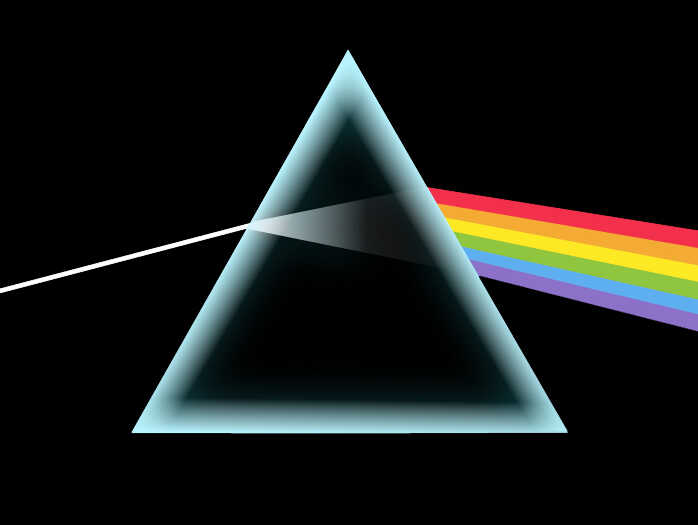
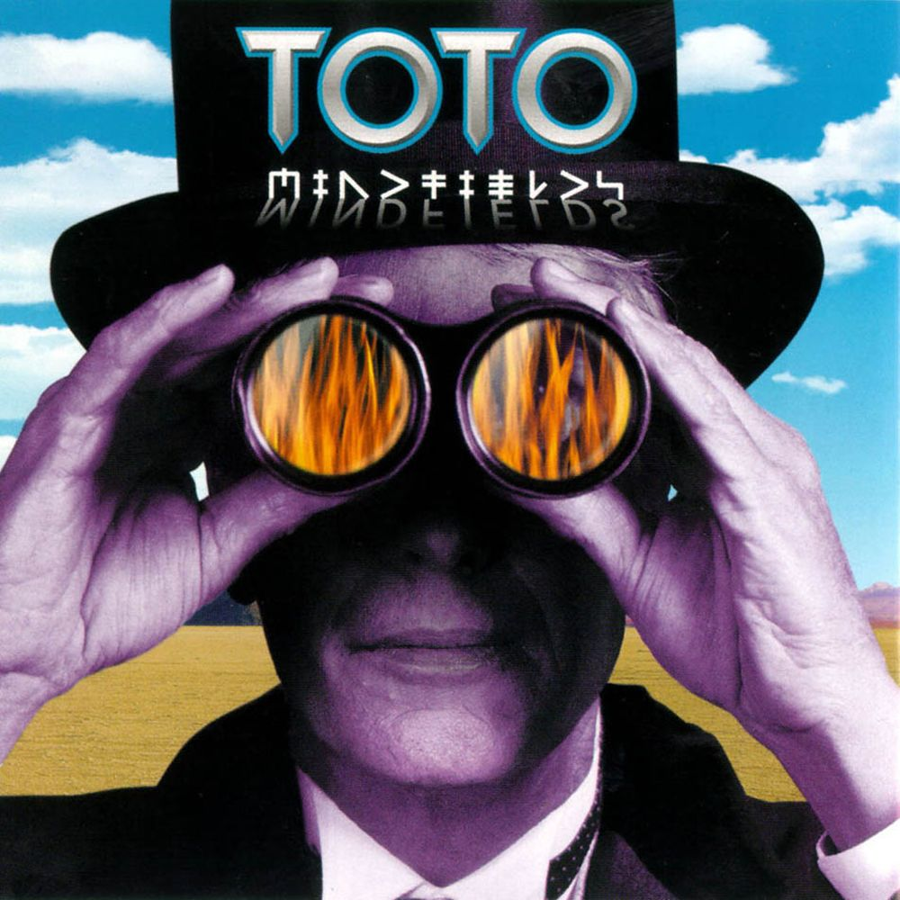

Depuis maintenant 10 ans, je pratique régulièrement la guitare avec un niveau académique de Cycle 2.
Je suis capable de jouer des morceaux très variés et j'apprécie particulièrement les choros brésiliens qui se caractérisent par un rythme rapide et des tonalités joyeuses malgré leur nom qui signifie "pleurs".
J'apprécie particulièrement Tico-Tico no Fubá de Zequinha de Abreu.
Le morceau que j'apprécie le plus jouer est Grand Vals de Francisco Tárrega.
En dehors de la guitare, j'apprécie aussi écouter tout type de musique, plus particulièrement le rock des années 1970 et 1980.
La discographie du groupe Toto est celle que j'apprécie le plus mais j'aime aussi celle de Queen et Pink Floyd.
Mes albums préférés sont de loin The Dark Side of the Moon et Mindfields.
 
Avec la musique, le cinéma est aussi un art que j'apprécie beaucoup. Mes films favoris sont "Piège de cristal" réalisé
par John McTiernan, "Night Call" de Dan Gilroy, ainsi que le récent "Yannick" de Quentin Dupieux.
Ces trois films appartiennent à des genres très différents mais restent de grandes œuvres. La mise en scène et
les mouvements de caméra du premier "Die Hard" ont permis de redéfinir le genre jusqu'à la sortie de "Die Hard 3" qui, là aussi,
redéfinira les codes établis par "Piège de Cristal".
"Night Call" ou "Nightcrawler" dans sa version originale est un thriller très prenant racontant l'histoire de Lou qui parcourt
la ville de Los Angeles à la recherche d'images chocs à vendre à des chaînes de télévision. J'apprécie particulièrement
le jeu de Jake Gyllenhaal dans le rôle de Lou, qui veut trouver des images de plus en plus graphiques et qui s'enfonce dans ce travail
quitte à ne plus avoir de morale.
Enfin, "Yannick" est une comédie qui possède des personnages très bien écrits et bien joués, notamment Yannick joué par Raphaël Quenard
qui s'ennuie devant une pièce de théâtre et décide de l'arrêter. S'ensuivent des péripéties où Yannick décide de réécrire la pièce
pour la rendre meilleure selon lui et la fait jouer par les comédiens.
Depuis mon enfance, je pratique la natation en club.
Après avoir arrêté pendant plusieurs années, j'ai repris cette activité cette année pour rester en bonne santé et pratiquer une activité physique.
Cette année j'ai aussi commencé la course à pied pour là aussi rester en bonne santé.